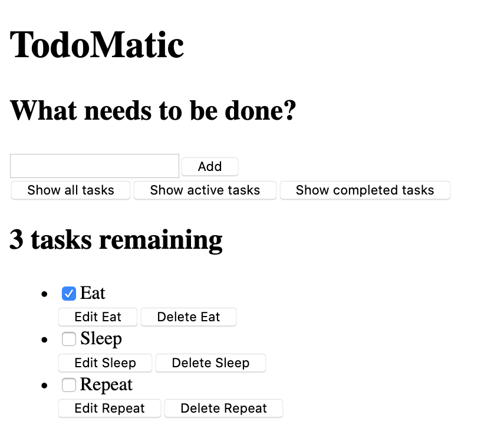

Let's say that we’ve been tasked with creating a proof-of-concept in React – an app that allows users to add, edit, and delete tasks they want to work on, and also mark tasks as complete without deleting them. This article will walk you through putting the basic App component structure and styling in place, ready for individual component definition and interactivity, which we'll add later.
Note: If you need to check your code against our version, you can find a finished version of the sample React app code in our todo-react repository. For a running live version, see https://mdn.github.io/todo-react-build/.
| Prerequisites: |
Familiarity with the core HTML, CSS, and JavaScript languages, knowledge of the terminal/command line. |
|---|---|
| Objective: | To introduce our todo list case study, and get the basic App structure and styling in place. |
In software development, a user story is an actionable goal from the perspective of the user. Defining user stories before we begin our work will help us focus our work. Our app should fulfill the following stories:
As a user, I can
We'll tackle these stories one-by-one.
create-react-app has made a few files we won't be using at all for our project.
App.css import from the top of App.js.logo.svg file, so remove that import too.Then, copy and paste the following commands into your terminal to delete some unneeded files. Make sure you’re starting in the app's root directory!
# Move into the src directory of your project cd src # Delete a few files rm -- App.test.js App.css logo.svg serviceWorker.js setupTests.js # Move back up to the root of the project cd ..
Notes:
npm start.As a starting point for this project, we're going to provide two things: An App() function to replace the one you have now, and some CSS to style your app.
Copy the following snippet to your clipboard, then paste it into App.js so that it replaces the existing App() function:
function App(props) {
return (
<div className="todoapp stack-large">
<h1>TodoMatic</h1>
<form>
<h2 className="label-wrapper">
<label htmlFor="new-todo-input" className="label__lg">
What needs to be done?
</label>
</h2>
<input
type="text"
id="new-todo-input"
className="input input__lg"
name="text"
autoComplete="off"
/>
<button type="submit" className="btn btn__primary btn__lg">
Add
</button>
</form>
<div className="filters btn-group stack-exception">
<button type="button" className="btn toggle-btn" aria-pressed="true">
<span className="visually-hidden">Show </span>
<span>all</span>
<span className="visually-hidden"> tasks</span>
</button>
<button type="button" className="btn toggle-btn" aria-pressed="false">
<span className="visually-hidden">Show </span>
<span>Active</span>
<span className="visually-hidden"> tasks</span>
</button>
<button type="button" className="btn toggle-btn" aria-pressed="false">
<span className="visually-hidden">Show </span>
<span>Completed</span>
<span className="visually-hidden"> tasks</span>
</button>
</div>
<h2 id="list-heading">
3 tasks remaining
</h2>
<ul
role="list"
className="todo-list stack-large stack-exception"
aria-labelledby="list-heading"
>
<li className="todo stack-small">
<div className="c-cb">
<input id="todo-0" type="checkbox" defaultChecked={true} />
<label className="todo-label" htmlFor="todo-0">
Eat
</label>
</div>
<div className="btn-group">
<button type="button" className="btn">
Edit <span className="visually-hidden">Eat</span>
</button>
<button type="button" className="btn btn__danger">
Delete <span className="visually-hidden">Eat</span>
</button>
</div>
</li>
<li className="todo stack-small">
<div className="c-cb">
<input id="todo-1" type="checkbox" />
<label className="todo-label" htmlFor="todo-1">
Sleep
</label>
</div>
<div className="btn-group">
<button type="button" className="btn">
Edit <span className="visually-hidden">Sleep</span>
</button>
<button type="button" className="btn btn__danger">
Delete <span className="visually-hidden">Sleep</span>
</button>
</div>
</li>
<li className="todo stack-small">
<div className="c-cb">
<input id="todo-2" type="checkbox" />
<label className="todo-label" htmlFor="todo-2">
Repeat
</label>
</div>
<div className="btn-group">
<button type="button" className="btn">
Edit <span className="visually-hidden">Repeat</span>
</button>
<button type="button" className="btn btn__danger">
Delete <span className="visually-hidden">Repeat</span>
</button>
</div>
</li>
</ul>
</div>
);
}
Now open public/index.html and change the <title> element’s text to TodoMatic. This way, it will match the <h1> at the top of our app.
<title>TodoMatic</title>
When your browser refreshes, you should see something like this:

It's ugly, and doesn’t function yet, but that's okay — we'll style it in a moment. First, consider the JSX we have, and how it corresponds to our user stories:
<form> element, with an <input type="text"> for writing out a new task, and a button to submit the form.<li>), and has buttons to edit and delete it and a checkbox to check it off as done.The form will allow us to make tasks; the buttons will let us filter them; the heading and list are our way to read them. The UI for editing a task is conspicuously absent for now. That's okay – we'll write that later.
You may notice some unusual attributes here. For example:
<button type="button" className="btn toggle-btn" aria-pressed="true"> <span className="visually-hidden">Show </span> <span>all</span> <span className="visually-hidden"> tasks</span> </button>
Here, aria-pressed tells assistive technology (like screen readers) that the button can be in one of two states: pressed or unpressed. Think of these as analogs for on and off. Setting a value of true means that the button is pressed by default.
The class visually-hidden has no effect yet, because we have not included any CSS. Once we have put our styles in place, though, any element with this class will be hidden from sighted users and still available to screen reader users — this is because these words are not needed by sighted users; they are there to provide more information about what the button does for screenreader users that do not have the extra visual context to help them.
Further down, you can find our <ul> element:
<ul role="list" className="todo-list stack-large stack-exception" aria-labelledby="list-heading" >
The role attribute helps assistive technology explain what kind of element a tag represents. A <ul> is treated like a list by default, but the styles we're about to add will break that functionality. This role will restore the "list" meaning to the <ul> element. If you want to learn more about why this is necessary, you can check out Scott O'Hara’s article, “Fixing Lists”.
The aria-labelledby attribute tells assistive technologies that we're treating our list heading as the label that describes the purpose of the list beneath it. Making this association gives the list a more informative context, which could help screen reader users better understand the purpose of it.
Finally, the labels and inputs in our list items have some attributes unique to JSX:
<input id="todo-0" type="checkbox" defaultChecked={true} />
<label className="todo-label" htmlFor="todo-0">
Eat
</label>
The defaultChecked attribute in the <input/ > tag tells React to check this checkbox initially. If we were to use checked, as we would in regular HTML, React would log some warnings into our browser console relating to handling events on the checkbox, which we want to avoid. Don't worry too much about this for now — we will cover this later on when we get to using events.
The htmlFor attribute corresponds to the for attribute used in HTML. We cannot use for as an attribute in JSX because for is a reserved word, so React uses htmlFor instead.
Notes:
true and false) in JSX attributes, you must enclose them in curly braces. If you write defaultChecked="true", the value of defaultChecked will be "true" — a string literal. Remember — this is actually JavaScript, not HTML!aria-pressed attribute used in our earlier code snippet has a value of "true" because aria-pressed is not a true boolean attribute in the way checked is.Paste the following CSS code into src/index.css so that it replaces what's currently there:
/* RESETS */
*,
*::before,
*::after {
box-sizing: border-box;
}
*:focus {
outline: 3px dashed #228bec;
outline-offset: 0;
}
html {
font: 62.5% / 1.15 sans-serif;
}
h1,
h2 {
margin-bottom: 0;
}
ul {
list-style: none;
padding: 0;
}
button {
border: none;
margin: 0;
padding: 0;
width: auto;
overflow: visible;
background: transparent;
color: inherit;
font: inherit;
line-height: normal;
-webkit-font-smoothing: inherit;
-moz-osx-font-smoothing: inherit;
-webkit-appearance: none;
}
button::-moz-focus-inner {
border: 0;
}
button,
input,
optgroup,
select,
textarea {
font-family: inherit;
font-size: 100%;
line-height: 1.15;
margin: 0;
}
button,
input {
overflow: visible;
}
input[type="text"] {
border-radius: 0;
}
body {
width: 100%;
max-width: 68rem;
margin: 0 auto;
font: 1.6rem/1.25 Arial, sans-serif;
background-color: #f5f5f5;
color: #4d4d4d;
}
@media screen and (min-width: 620px) {
body {
font-size: 1.9rem;
line-height: 1.31579;
}
}
/*END RESETS*/
/* GLOBAL STYLES */
.form-group > input[type="text"] {
display: inline-block;
margin-top: 0.4rem;
}
.btn {
padding: 0.8rem 1rem 0.7rem;
border: 0.2rem solid #4d4d4d;
cursor: pointer;
text-transform: capitalize;
}
.btn.toggle-btn {
border-width: 1px;
border-color: #d3d3d3;
}
.btn.toggle-btn[aria-pressed="true"] {
text-decoration: underline;
border-color: #4d4d4d;
}
.btn__danger {
color: #fff;
background-color: #ca3c3c;
border-color: #bd2130;
}
.btn__filter {
border-color: lightgrey;
}
.btn__primary {
color: #fff;
background-color: #000;
}
.btn-group {
display: flex;
justify-content: space-between;
}
.btn-group > * {
flex: 1 1 49%;
}
.btn-group > * + * {
margin-left: 0.8rem;
}
.label-wrapper {
margin: 0;
flex: 0 0 100%;
text-align: center;
}
.visually-hidden {
position: absolute !important;
height: 1px;
width: 1px;
overflow: hidden;
clip: rect(1px 1px 1px 1px);
clip: rect(1px, 1px, 1px, 1px);
white-space: nowrap;
}
[class*="stack"] > * {
margin-top: 0;
margin-bottom: 0;
}
.stack-small > * + * {
margin-top: 1.25rem;
}
.stack-large > * + * {
margin-top: 2.5rem;
}
@media screen and (min-width: 550px) {
.stack-small > * + * {
margin-top: 1.4rem;
}
.stack-large > * + * {
margin-top: 2.8rem;
}
}
.stack-exception {
margin-top: 1.2rem;
}
/* END GLOBAL STYLES */
.todoapp {
background: #fff;
margin: 2rem 0 4rem 0;
padding: 1rem;
position: relative;
box-shadow: 0 2px 4px 0 rgba(0, 0, 0, 0.2), 0 2.5rem 5rem 0 rgba(0, 0, 0, 0.1);
}
@media screen and (min-width: 550px) {
.todoapp {
padding: 4rem;
}
}
.todoapp > * {
max-width: 50rem;
margin-left: auto;
margin-right: auto;
}
.todoapp > form {
max-width: 100%;
}
.todoapp > h1 {
display: block;
max-width: 100%;
text-align: center;
margin: 0;
margin-bottom: 1rem;
}
.label__lg {
line-height: 1.01567;
font-weight: 300;
padding: 0.8rem;
margin-bottom: 1rem;
text-align: center;
}
.input__lg {
padding: 2rem;
border: 2px solid #000;
}
.input__lg:focus {
border-color: #4d4d4d;
box-shadow: inset 0 0 0 2px;
}
[class*="__lg"] {
display: inline-block;
width: 100%;
font-size: 1.9rem;
}
[class*="__lg"]:not(:last-child) {
margin-bottom: 1rem;
}
@media screen and (min-width: 620px) {
[class*="__lg"] {
font-size: 2.4rem;
}
}
.filters {
width: 100%;
margin: unset auto;
}
/* Todo item styles */
.todo {
display: flex;
flex-direction: row;
flex-wrap: wrap;
}
.todo > * {
flex: 0 0 100%;
}
.todo-text {
width: 100%;
min-height: 4.4rem;
padding: 0.4rem 0.8rem;
border: 2px solid #565656;
}
.todo-text:focus {
box-shadow: inset 0 0 0 2px;
}
/* CHECKBOX STYLES */
.c-cb {
box-sizing: border-box;
font-family: Arial, sans-serif;
-webkit-font-smoothing: antialiased;
font-weight: 400;
font-size: 1.6rem;
line-height: 1.25;
display: block;
position: relative;
min-height: 44px;
padding-left: 40px;
clear: left;
}
.c-cb > label::before,
.c-cb > input[type="checkbox"] {
box-sizing: border-box;
top: -2px;
left: -2px;
width: 44px;
height: 44px;
}
.c-cb > input[type="checkbox"] {
-webkit-font-smoothing: antialiased;
cursor: pointer;
position: absolute;
z-index: 1;
margin: 0;
opacity: 0;
}
.c-cb > label {
font-size: inherit;
font-family: inherit;
line-height: inherit;
display: inline-block;
margin-bottom: 0;
padding: 8px 15px 5px;
cursor: pointer;
touch-action: manipulation;
}
.c-cb > label::before {
content: "";
position: absolute;
border: 2px solid currentColor;
background: transparent;
}
.c-cb > input[type="checkbox"]:focus + label::before {
border-width: 4px;
outline: 3px dashed #228bec;
}
.c-cb > label::after {
box-sizing: content-box;
content: "";
position: absolute;
top: 11px;
left: 9px;
width: 18px;
height: 7px;
transform: rotate(-45deg);
border: solid;
border-width: 0 0 5px 5px;
border-top-color: transparent;
opacity: 0;
background: transparent;
}
.c-cb > input[type="checkbox"]:checked + label::after {
opacity: 1;
}
Save and look back at your browser, and your app should now have reasonable styling.
Now our todo list app actually looks a bit more like a real app! The problem is: it doesn’t actually do anything. We’ll start fixing that in the next chapter!
{{PreviousMenuNext("Learn/Tools_and_testing/Client-side_JavaScript_frameworks/React_getting_started","Learn/Tools_and_testing/Client-side_JavaScript_frameworks/React_components", "Learn/Tools_and_testing/Client-side_JavaScript_frameworks")}}